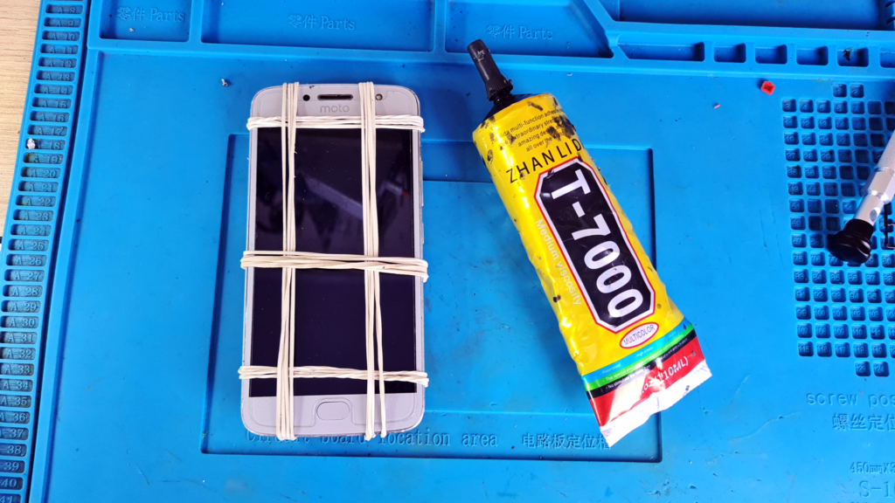
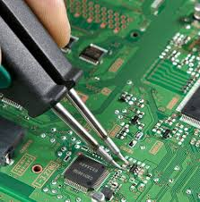

Meus trabalhos

Colagem de tela j5
Neste trabalho fiz a troca de uma tela de um celular sansung j5s, celular este que utiliza botão home e que muitos tecnicos deixa ele afundao mas eu ja sabia a tecnica de como trocar sem deixalo fundo.
Software de celulares
Um aparelho da sansung (A55) chegou reiniciando após pulsar power. Já logo deduzi que seria o software do aparelho ou alguma peça em curto. Passei o software no odim e voltou a funcionar.

Explorando o Universo: microsoldagem
Quando se envolve a microsoldagem existe um universo de como e quando fazer cada um deles. Sendo a microsoldagem basica como trocar conector de fone de ouvido, ao avançado como rebaling que é a retirada de um CI e soldada uma nova.